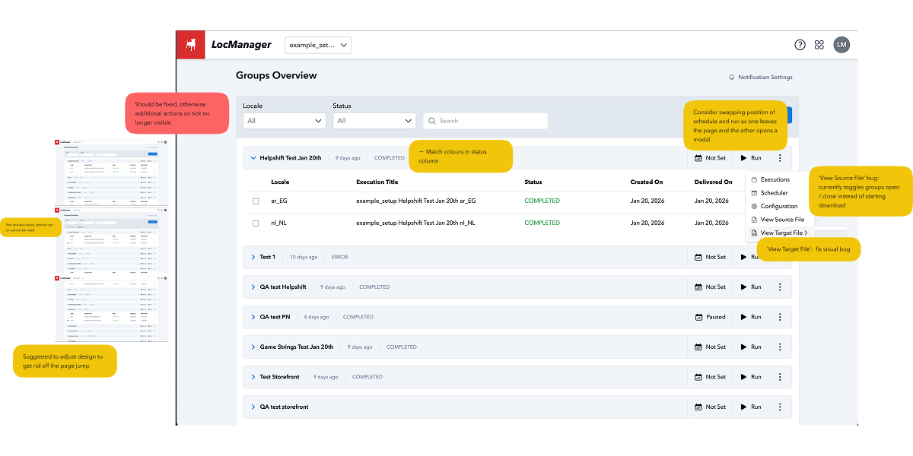
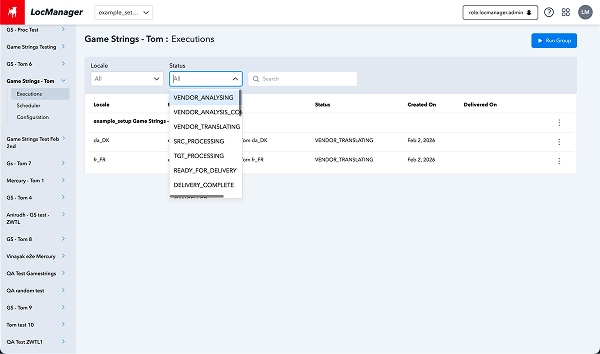
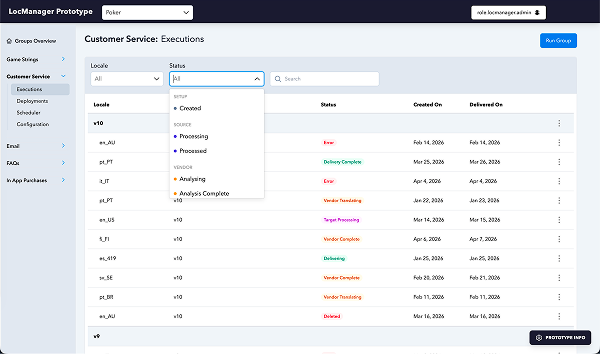
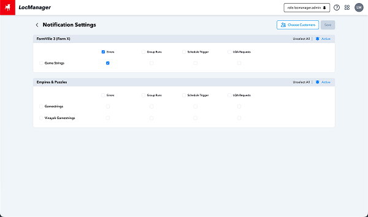
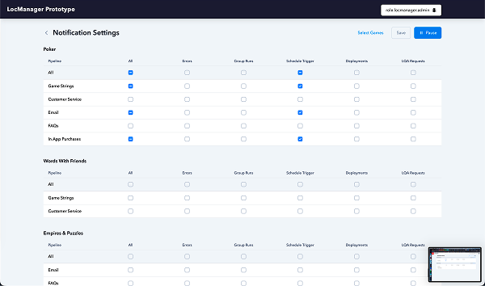
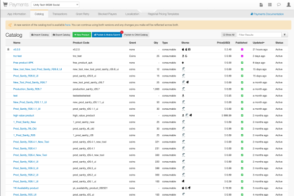
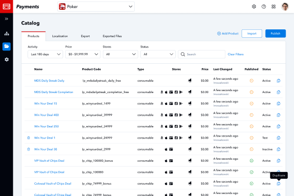
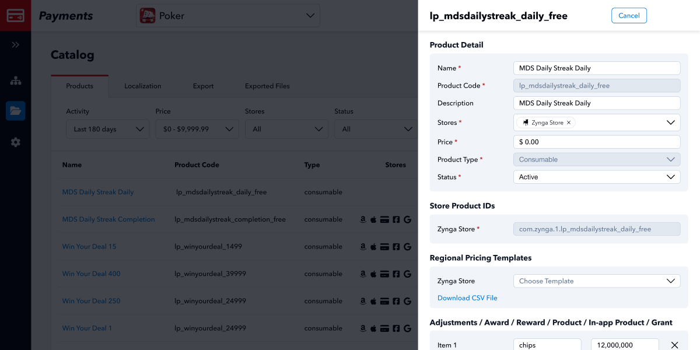

I make intricate systems feel simple and intuitive.
Designing products that simplify complex operational workflows — grounded in research, design thinking, and continuous iteration.

Payments
Redesigning an internal tool used by game teams, release operations and customer support — simplifying complex workflows and reducing reliance on external teams.
View case study →

LocManager
Inheriting an internal localisation tool and iterating on the design — resolving UX issues, improving workflows, and consolidating multiple tools into one platform.
View case study →
LocManager
The Problem
LocManager is Zynga's internal localisation tool that enables producers to manage the process of sending translation requests from game teams to external translation vendors, then push translated content back. I joined the project just before general access release, inheriting a tool with several UX issues: flows that didn't behave as expected (e.g. schedules updating before save was pressed), misplaced buttons, an overly complex status dropdown, excessive visual nesting, and a notification settings feature with high cognitive load.
Process
1. Audit
Conducted a core review of the existing interface, identifying awkward flows, misplaced actions, confusing status options, and areas of unnecessary complexity. Also analysed the Lockit tool, which is SocialPoint's legacy tool and being replaced by LocManager, to understand feature parity requirements.
2. Iterate
Downloaded the codebase from the GitHub repository and worked through issues via prototyping, using AI to accelerate exploration. Shared results continuously with engineering to address the identified problems.
3. Extend
Currently working on post-general-access features focused on feature parity with Lockit, consolidating all teams onto a single platform. We are exploring how AI can be integrated, particularly in the context of content management.

Solution
Addressed the core usability issues: corrected save behaviour so changes only apply when explicitly confirmed, repositioned the save button to sit where users expect it, simplified the status dropdown to reduce confusion, reduced visual nesting (boxes inside boxes), and redesigned the notification settings to lower cognitive load.
Status dropdown


Notification settings


Outcome
Improved usability
Core UX issues resolved before general access
Single platform
Working towards consolidating Lockit and LocManager into one tool for all teams
AI exploration
Investigating AI integration for content management workflows
Reflection
Coming into a project late without handover means I inherited decisions I didn't make and was lacking context for. I tackled this through intensive catch ups with the team to build up my understanding of the tool and user needs from scratch. The challenge was not starting from scratch however, but identifying what matters most and making targeted improvements without disrupting what's already working. Prototyping directly in code (with AI assistance) also proved far more effective for this project than static mockups, because it let me share working examples with engineering rather than abstract specifications.
Payments
The Problem
Zynga's Payments Admin tool is used by game teams, release operations and customer support, including the player VIP team to manage in-game catalogue products, export to storefronts, track player transactions, and manage blocked players. The existing tool had grown haphazardly over time: it was difficult to use, suffered from poor performance, and created a heavy reliance on external teams for tasks users should have been able to complete independently.
Phase 1 addressed the catalogue and localisation pages. The ongoing work continues migrating the remaining pages to a redesigned UI.
Process
1. Research
Conducted 20+ user interviews across game teams, release operations, customer support, and the payments engineering team. Captured qualitative feedback to establish core user journeys, understand performance pain points, and determine user needs.
2. Design
Translated research findings into design requirements. Set up wireframes addressing key issues: simplified table layouts, stacked search/sort/filter, auto-fill input fields, clearer publish flows, and improved export functionality. Iterated continuously with engineering.
3. Iterate
Working through the tool tab by tab — catalogue and localisation complete, transactions in progress, with regional pricing templates, grant retry, and blocked players to follow. Each phase follows the same research-first approach.
What users said
“The publish modal is difficult to understand due to existing design choices - bullet points look like checkboxes.”
“The overall process is confusing. There is no set process, so new members have no official learning material to rely on.”
“Exporting for Apple fails frequently when more than five catalogue items are selected. The only workaround is to keep attempting the export - usually within five tries it works.”
“Free transactions cluttering the list makes finding actual purchases difficult. There is no filtering on the main tab - no filtering by store, vendor, status, amount, or date range.”
From 20+ interviews across game teams, release operations, customer support, and the payments engineering team
Solution


The redesigned Payments Admin simplifies complex workflows that previously required external support. Key improvements include a cleaner catalogue table with customisable columns, auto-filled product fields to reduce manual input, a more intuitive publish flow that reduces user anxiety, and streamlines the export functionality. A direct link to the Slack support channel in the portal header helps prevent reliance on the release operations team for routine tasks.

Outcome
Cleaner UI
Simplified flows reduce cognitive load for all user types
Reduced reliance
Game teams can complete tasks independently, reducing dependency on release operations
Ongoing
Phased migration continues with the same research-led approach for each remaining tab
Reflection
This project reinforced how important it is to let research lead the design direction rather than assumptions. The user base turned out to be far more diverse than expected, from VIP account managers checking a single transaction, to release operations exporting hundreds of products at a time, and each group interacts with the tool in fundamentally different ways. If I were starting again, I'd push earlier for role-based access and tailored views rather than a one-size-fits-all interface.